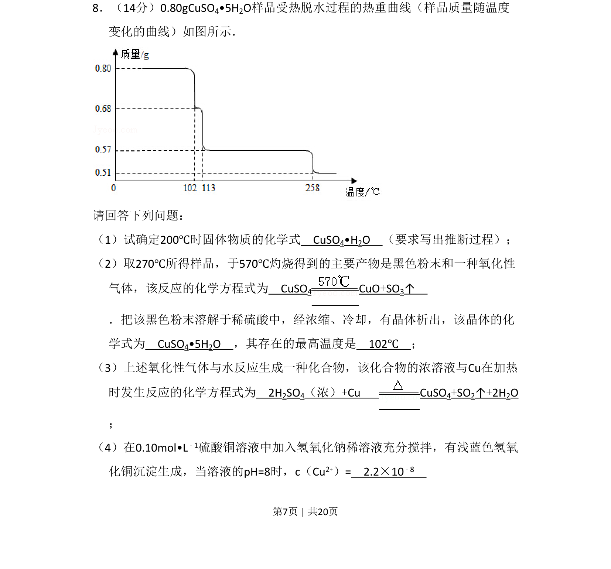
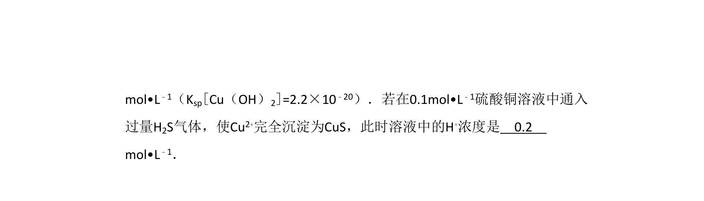
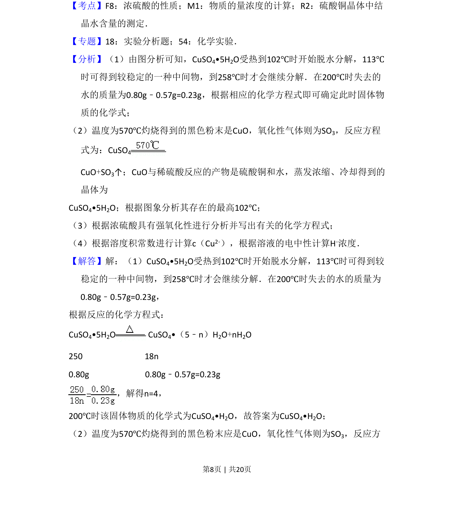
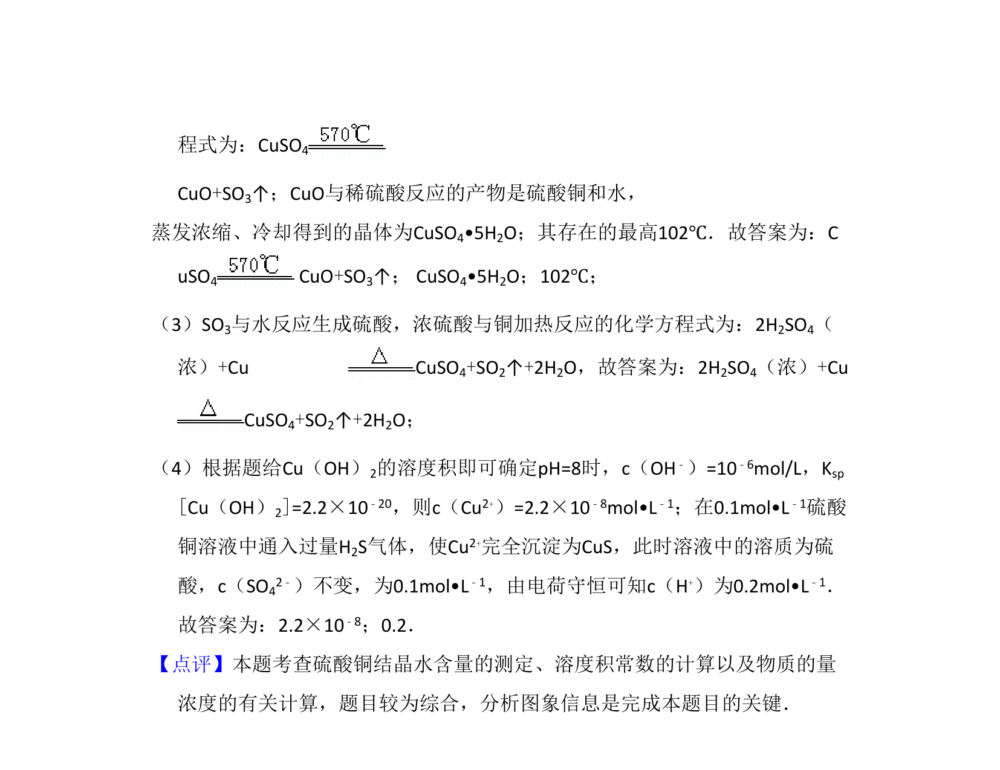

考点：热重曲线分析 无水盐化学式推断 铜及其化合物性质 溶度积


通过热重曲线推断硫酸铜晶体脱水产物，书写相关反应方程式并进行沉淀溶解平衡计算。


📄 原 PDF 第 7 页：
素材/真题/吉林/2008-2024·（吉林）化学高考真题/2011年高考化学试卷（新课标）（解析卷）.pdf
8．（14分）0.80gCuSO4•5H2O样品受热脱水过程的热重曲线（样品质量随温度 变化的曲线）如图所示． 请回答下列问题： （1）试确定200℃时固体物质的化学式 CuSO4•H2O （要求写出推断过程）； （2）取270℃所得样品，于570℃灼烧得到的主要产物是黑色粉末和一种氧化性 气体，该反应的化学方程式为 CuSO4 CuO+SO3↑ ．把该黑色粉末溶解于稀硫酸中，经浓缩、冷却，有晶体析出，该晶体的化 学式为 CuSO4•5H2O ，其存在的最高温度是 102℃ ； （3）上述氧化性气体与水反应生成一种化合物，该化合物的浓溶液与Cu在加热 时发生反应的化学方程式为 2H2SO4（浓）+Cu CuSO4+SO2↑+2H2O ； （4）在0.10mol•L﹣1硫酸铜溶液中加入氢氧化钠稀溶液充分搅拌，有浅蓝色氢氧 化铜沉淀生成，当溶液的pH=8时，c（Cu2+）= 2.2×10﹣8